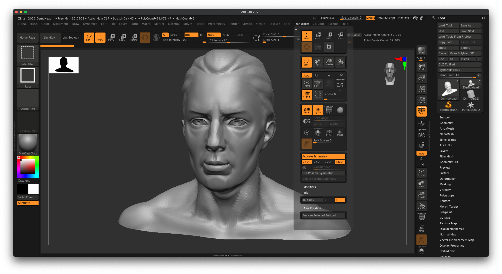
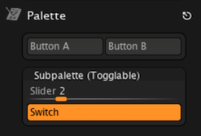
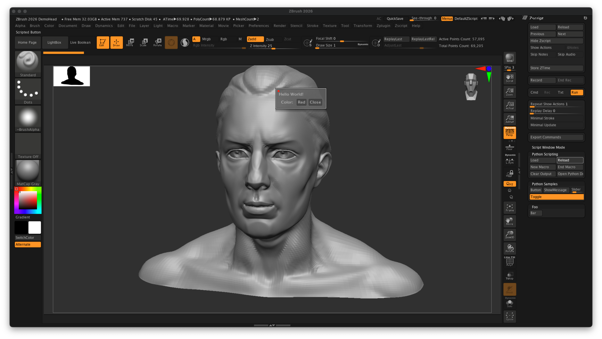
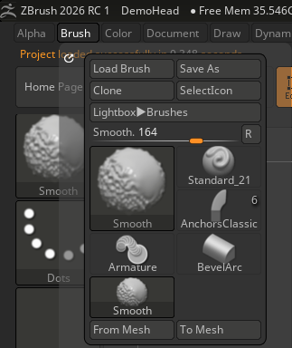

API Overview¶
Explains the conventions and capabilities of the ZBrush API.
The ZBrush Python API exposes the same functionalities as the ZScript API does but allows for harnessing the full power of the Python programming language and its ecosystem. The API is organized into three main categories:
Gui API
Describes API entities for creating, querying, and manipulating GUI elements.
Modeling API
Describes API entities to interact with scene data such as tools, strokes, curves, and ZSpheres.
System API
Describes API entities to interact with system features such as file handling, the timeline, and more.
The following sections provide an overview of the style and capabilities of the ZBrush API.
API Style¶
The ZBrush Python API is very procedural-imperative and GUI centered in style. Rather than being centered around functions and objects that realize abstract concepts that stand behind a GUI, it focuses on replicating user interactions in the GUI. As a result, users will find themselves working with a series of function calls to manipulate the application state, rather than creating and manipulating objects or similar workflows used by more object-oriented APIs. When we look at the Example hello_world example, we can see this procedural style in action:
"""Demonstrates how to write a basic script to create an editable cube in the center of the canvas
and sets up the view.
"""
import zbrush.commands as zbc
def main() -> None:
"""Runs when Zbrush executes this script.
"""
# We set ZBrush into its 2026 configuration state, to start with a known UI state.
zbc.config(2026)
# We select the Cube 3D tool and convert it to a polymesh.
zbc.press("Tool:Cube3D")
zbc.press("Tool:Make PolyMesh3D")
# We draw a stroke on the canvas to place the cube. This string is a pre-recorded brush stroke.
stroke: zbc.Stroke = zbc.Stroke(
"(ZObjStrokeV03n27%p2377BA8p191C7ACPnA63An234Fn-BF76s100672Cs100672Cs100672Cz-7E6B=H231V219H230"
"V216H22FV214h22E55v210AAH22Ev20C40h22D40v203C0H22Dv1F980H22DV1EEH22DV1E2h22D40v1D5C0h22DC0v1C9"
"80h22E40v1BD40h22EC0v1B040H22Fv1A280H22Fv19380h22EC0v18480h22DC0v17640h22C40v16980h22A80v15F40"
"h228C0v15740h227C0v15240h22740v14F40h226C0v14D80h22680v14C80h22640v14B80H226v14A80H226v149C0)")
zbc.canvas_stroke(stroke)
# Now we enable edit mode to edit the cube.
zbc.press("Transform: Edit")
# And finally, we rotate the camera into a 45°, 45° angle to get a better view on the cube, and
# then frame the object in the view.
zbc.set_transform(x_rotate=45, y_rotate=45, z_rotate=0)
zbc.press("Transform:Fit Mesh To View")
# This code, the "if _name__ ..." is called the main guard and ensures that the main() function
# is only executed when this script is run directly, not when it is imported as a module.
if __name__ == "__main__":
main()
So, this script is very literal in programmatically replicating what a user would do, by selecting the Cube3D tool from the tool picker, drawing it on the canvas, entering edit mode, and then adjusting the view. For setting up the tool, there also exist more abstracted functions, and for setting up the view, we could also choose a less abstracted approach than set_transform by using a prerecorded stroke to rotate the camera.
Automatically recorded scripts tend to be very GUI centric and literal in their style, while manually written scripts can be more abstract. However, the general style of both is heavily influenced by the GUI centric nature of the ZBrush API. And it is often preferable to embrace this GUI centric style, as it often leads to simpler and more robust scripts. It is for example often more work to use the abstracted tool functions in the Gui API which operate on tool indices and IDs, rather than just pressing the button of the tool in the tool picker, using its item path.
Basic Features¶
Note
See the System API for an overview of system related API entities.
Due to the procedural nature of the ZBrush API, there exist no atomic types such as vectors, transforms, colors, or matrices. Instead, such data is represented via basic types such as strings, integers, and floats. Colors are represented as integers, where the individual color channels are packed into a single integer value, which can be generated with the formula R << 16 | G << 8 | B, or the function zbrush.commands.rgb.
The SDK offers a vector type in its code examples which implements components unpacking so that it can be used with API functions which expect the components of a vector as separate arguments. However, this is only a convenience class defined in Python and not part of the API itself. See Example lib_zb_math for more information.
Modeling Features¶
Note
See the Modeling API for an overview of modeling related API entities.
ZBrush currently only offers a shallow modelling API. The following aspects are covered:
Brushes |
Brushes have no API representation at all but can be manipulated via the UI in the same way a user could. But there is no bitmap class which would represent brushes in memory. This can be mitigated by using third party libraries and im- and exporting brush textures, but that comes with significant overhead. |
Curves |
Curves only provide write access via the API. Existing curves cannot be read or queried in any way. A curve is modeling input for a curve brush such as the CurveStandard brush that generates geometry. I.e., curves fill the role of splines in ZBrush. |
Tools |
Tools provide no significant API access at all at the moment. There is very limited read access via |
Strokes |
Strokes provide read and write access via the API but strokes can only be recorded and played back. There is no way to create strokes programmatically. A stroke is a series of points on the canvas that represent brush input. Strokes are used to apply brush effects to the canvas or to 3D models. |
ZSpheres |
ZSpheres provide full read and write access with no significant limitations. |
Gui Features¶
Note
See the Gui API for an overview of GUI related API entities.
The ZBrush API is very GUI centric and provides a rich toolset to create, manipulate, and interact with the ZBrush user interface. To embrace these strengths, one must understand the three central concepts used in the GUI API: palettes, notes, and item paths.
Palettes¶
The major abstractions in ZBrush’s GUI system are palettes and sub-palettes. Palettes are top the levels items that also appear as menu entries in the menu bar of ZBrush. Palettes both bare characteristics of a menu and a window as it encapsulates both a label shown in the menu as well as the GUI area associated with that label which holds multiple interface items. Palettes can be torn off from the main menu and docked in the UI. Each palette can contain multiple sub-palettes, which are smaller sections of the palette that can be used to group related interface items.

Fig. I: Both the Transform menu which is expanded and the Tool section the right sidebar are palettes. They bare both characteristics of a menu and a window. Labeled sections within these palettes such as the Deformation section in the Tool palette or the Modifiers section in the Transform palette are sub-palettes.¶
Palettes and sub-palettes can both contain buttons, sliders, and switches. Labels and images can be emulated with a button that is disabled.

Fig. II: The add_palette examples demonstrates all scriptable ZBrush interface elements - palettes, sub-palettes, buttons, sliders, and switches - in one example.¶
Notes¶
Where palettes and sub-palettes are ZBrush’s version of non-modal windows, i.e., windows the user can interact with while still being able to interact with other parts of the UI, Notes and Messages are modal windows, i.e., dialogs. A Note is a small window within the UI of ZBrush that is user defined and can be used to display information or gather input from the user. A message is a system dialog that is used to display important information or warnings to the user, or ask yes/no questions.

Fig. III: A Note is a modal window within the ZBrush UI that the user has to interact with before being able to continue using the application. Other than palettes and sub-palettes, notes can only contain text, buttons, and switches.¶
Item Paths¶
An item path is a string that uniquely identifies an interface item and is a key concept in the ZBrush API. Item paths are constructed over the interface labels as seen in the ZBrush GUI.

Fig. IV: The Brush palette in ZBrush.¶
To clone for example the current brush, one would use the item path Brush:Clone like this:
from zbrush import commands as zbc
# Press the "Clone" button in the "Brush" palette
zbc.press("Brush:Clone")
# Or equivalently set the item value to True.
zbc.set("Brush:Clone", True)
Where Brush refers to the Brush palette and Clone to the Clone button in that palette. Similarly, one could load a new brush by using the item path Brush:Load Brush:
from zbrush import commands as zbc
# Press the "Load Brush" button in the "Brush" palette
zbc.press("Brush:Load Brush")
# These will also work because item paths are case insensitive and ignore spaces in labels.
zbc.press("Brush:LoadBrush")
zbc.press("brush:load brush")
zbc.press("brush:loadbrush")
From this example we can also see that item paths are case insensitive and ignore spaces. The SDK examples tend to use item paths as seen in the UI, i.e., with spaces and capitalization, to improve readability, but this is not a requirement. More complex item paths concatenate multiple levels of the GUI hierarchy using the : operator. The Twist Rate in the Twist sub-palette of the Brush palette for example has the item path Deformation:Twist:Twist Rate.
from zbrush import commands as zbc
# Set the "Twist Rate" slider in the "Twist" sub-palette of the "Deformation" palette to 45.
zbc.set("Deformation:Twist:Twist Rate", 45.0)
One last not so obvious quality of item paths applies to brushes, tools, sub tools, materials, and textures and all other interface items that are presented in pickers (i.e., list style selection dialogs). All such items are always accessible via their name, even when they are not directly visible in the GUI (and only shown in a picker).
and that is all loaded entities are directly settable via their name, i.e., item path.
from zbrush import commands as zbc
# Derived from the screen shot shown in Fig. I, it makes sense that this works, because
# we can literally see the button named "Smooth" in the "Brush" palette.
zbc.press("Brush:Smooth")
# But this will also work, a brush only visible when we open the brush picker. All elements of list
# style picker items are always accessible via their under the pallette or sub-palette the picker
# belongs to; in this case the "Brush" palette.
zbc.press("Brush:Pinch")
Composed from UI Labels |
Item paths are constructed from the labels of the ZBrush GUI, concatenated with colons (:) to represent hierarchy levels of pallettes and sub-palettes. |
Case Insensitive and Space Agnostic |
Item paths are case insensitive and ignore spaces. |
Picker Items Accessible by Name |
Items in pickers (like brushes, tools, materials) can be accessed directly by their names regardless of their visibility in the GUI. The parent item is the palette or sub-palette the picker belongs to. |
Empty Item Path |
The empty item path (“”) refers to the Tutorial View of ZBrush (i.e., the area expandable from the bottom of screen which also contains the console), the item path “Foo” would refer to a button, slider, or switch in the Tutorial View named Foo when there is no palette named Foo. |
See also¶
Gui API
Describes API entities for creating, querying, and manipulating GUI elements.
Modeling API
Describes API entities to interact with scene data such as tools, strokes, curves, and ZSpheres.
System API
Describes API entities to interact with system features such as file handling, the timeline, and more.
Style Guide
Explains the code style and conventions used in this SDK.
Importing Libraries
Explains how to provide and import libraries in your plugins.